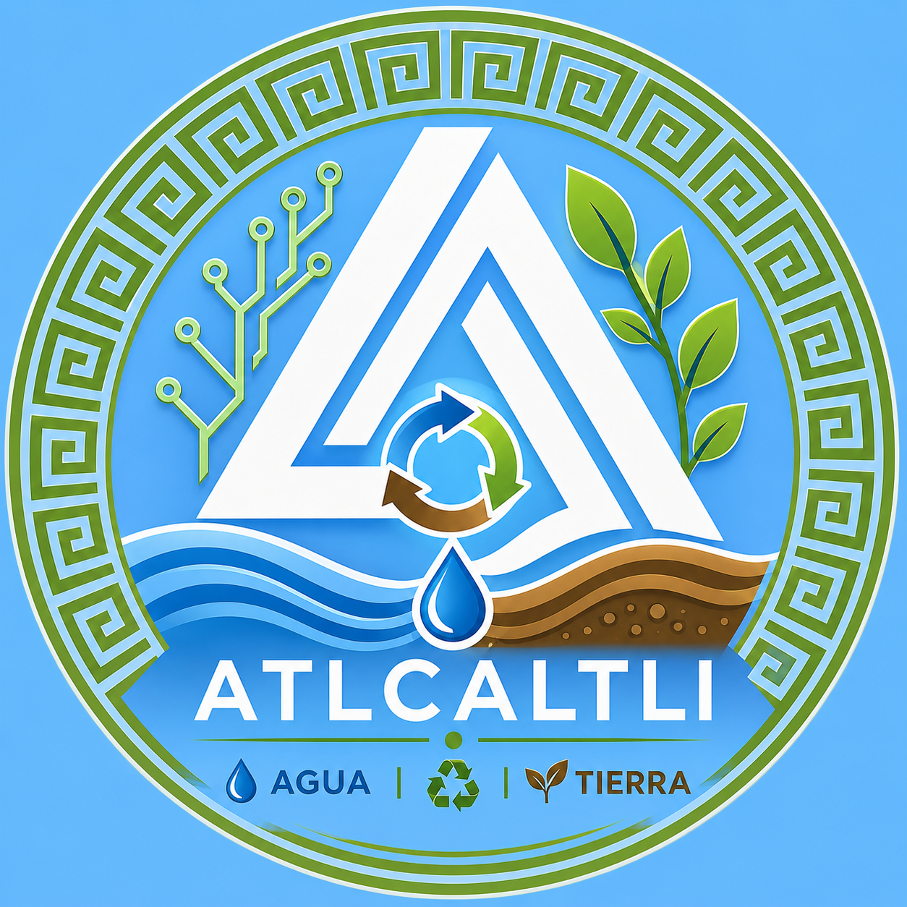
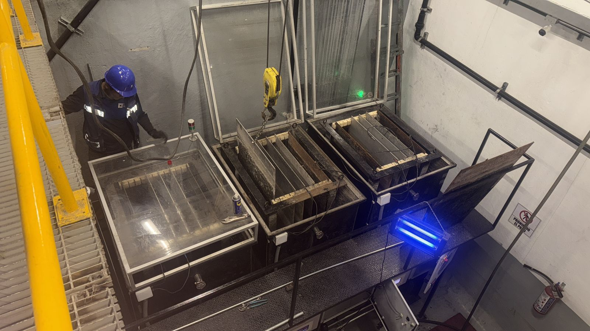
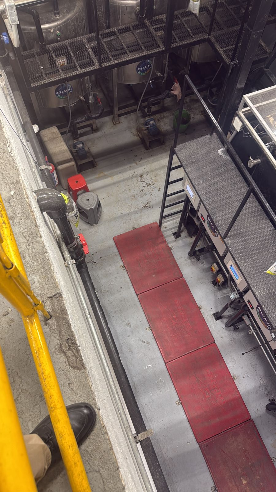
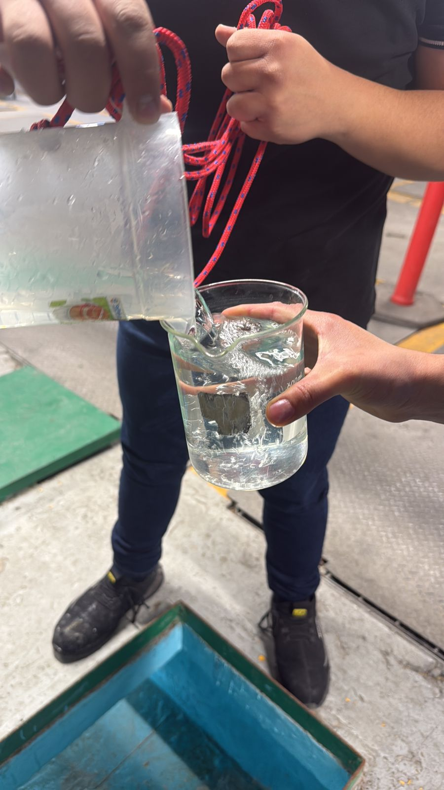
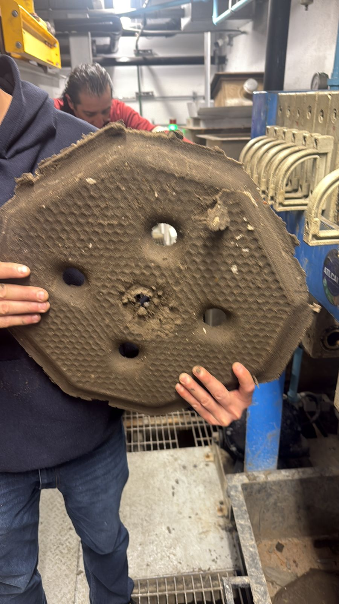

El espacio donde el agua y la tierra recuperan su equilibrio para dar vida.
Durante años hemos ensuciado el agua, la hemos usado como si fuera un recurso infinito y muchas veces la hemos devuelto contaminada al entorno.
En Atlcaltli creemos que ha llegado el momento de cambiar esa relación: recuperar el agua, separar lo que la contamina y devolver cada elemento al lugar donde pueda generar vida.
El agua que por años hemos ensuciado, es tiempo de limpiarla.
Ser una organización sólida que contribuya a la recuperación y aprovechamiento responsable del agua y la tierra, desarrollando soluciones tecnológicas sustentables que satisfagan las necesidades de nuestros clientes y comunidades, apoyados en la innovación, el trabajo en equipo y el valor humano.
Ser una organización reconocida por la calidad e impacto de sus soluciones en tratamiento de agua, saneamiento, automatización y tecnologías ambientales, convirtiéndonos en un referente de innovación, sustentabilidad y desarrollo para clientes, colaboradores, instituciones y comunidades.
El agua y la tierra no son residuos ni recursos aislados; son elementos esenciales de la vida que deben ser comprendidos, protegidos y aprovechados de manera responsable.



